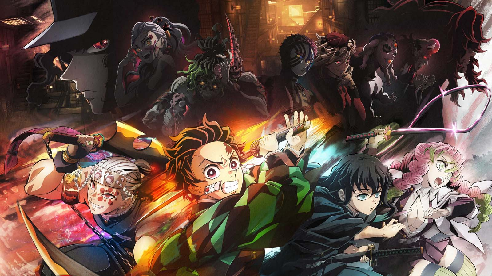

The best Action anime for new fans:
Action anime are some of the most popular anime worldwide. Often filled with intense and 'hype' moments, action anime are all about high energy action scenes. If you're a fan of exciting fight scenes with (usually) spectacular animation, you will likely enjoy the two shows I'm about to show you.
Number 1 - Jujutsu Kaisen

Jujutsu Kaisen, JJK for short, is often considered the best 'new-gen' anime out there.
The story of JJK follows its protagonist Yuji Itadori as he becomes part of a secret group of 'Jujutsu Sorcerers', who fight to rid the world of the 'curses' that plague humanity. Hardship, regret, shame: the negative feelings that humans feel become Curses that lurk in our everyday lives. The Curses run rampant throughout the world, capable of leading people to terrible misfortune and even death. What's more, the Curses can only be exorcised by another Curse.
Itadori Yuji is a boy with tremendous physical strength, though he lives a completely ordinary high school life. One day, to save a friend who has been attacked by Curses, he eats the finger of the Double-Faced Specter, taking the Curse into his own soul. From then on, he shares one body with the Double-Faced Specter. Guided by the most powerful of sorcerers, Gojo Satoru, Itadori is admitted to the Tokyo Metropolitan Technical High School of Sorcery, an organization that fights the Curses... and thus begins the heroic tale of a boy who became a Curse to exorcise a Curse, a life from which he could never turn back.
(Source: Crunchyroll, Anilist)
Warning: Jujutsu Kaisen can be considered a pretty brutal show to watch, and I would advise against having younger children watch this show without supervision.
Honorable mention - Demon Slayer
It is the Taisho Period in Japan. Tanjiro, a kindhearted boy who sells charcoal for a living, finds his family slaughtered by a demon. To make matters worse, his younger sister Nezuko, the sole survivor, has been transformed into a demon herself. Though devastated by this grim reality, Tanjiro resolves to become a “demon slayer” so that he can turn his sister back into a human, and kill the demon that massacred his family.
(Source: Crunchyroll, Anilist)
Warning: Jujutsu Kaisen can be considered a pretty brutal show to watch, and I would advise against having younger children watch this show without supervision.